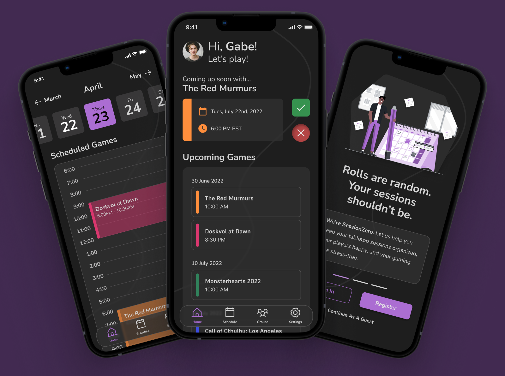
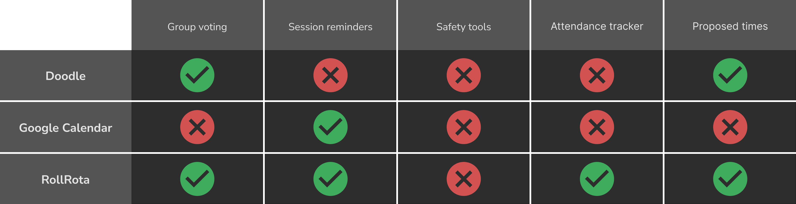

Designing a TTRPG scheduling app.
Being into tabletop games has never been better. But everyone still has the same old complaints.
It’s basically a running joke: the hardest thing isn’t learning the game but pulling three to six functioning adults into a Zoom call or, even more sparingly, in person in order to play it.
SessionZero was born from that impulse: how do we make scheduling easier and reduce the cognitive load on a group starting out but finding themselves bouncing from Google Calendar to Zoom to a notekeeping app to virtual tabletop platforms or an in-person table?
Responsibilities: Competitive audits, low and high-fidelity wireframing, usability studies, accessibility, design iteration.
Tools: Figma
Timeframe: Feb '23 - Dec ‘23
The Challenge
Create an app for tabletop game players that provides quick scheduling as well as reminders for all players in a group, and that streamlines and organizes the process of forming a group or beginning a new game with an existing group. This app should facilitate communication and communication.Objectives & Research
User Research

Those engaging with TTRPGs can generally be divided into two groups: players, and game masters (GMs). Though these two groups are both engaged with the game, GMs generally have more management-focused concerns, while players interact with the game on a more general level guided by a game master. From interviews and surveys, I managed to synthesize three main pain points.
- Unresponsive players or GMs: Both sides often invest a particularly large amount of time into games. However, when one person disappears off the face of the planet or otherwise is unresponsive, it can make the other participants feel unwanted and eventually detached from the whole game.
- Last minute cancellations: This was unsurprising to basically anyone involved. Scheduling conflicts are, as you will often see, the absolute bane of any group. Rescheduling, conflicts, and last minute cancellations are all common.
- Organizing multiple games: GMs are especially likely to play multiple games at once—and even play and run multiple games at once. Imagine having different games, maybe even technically using the same system, all overlapping in different weekly, biweekly, or monthly schedules.

The pain points experienced here are mostly all based around facilitating communication and scheduling. Although I had other features in mind, I knew that I'd have to begin with those core parts of the experience.
Competitive Audit
Running a competitive audit was fairly easy. I began by researching apps used by others to schedule out their games and ran a general feature comparison to start. I looked at Doodle, a common scheduling app, the classic Google Calendar, and RollRota, a website designed for a similar niche.
I found that RollRota had the most robust set of core systems, but was very focused on scheduling. From speaking to some players, I knew that the initial starting experience often involved a lot of steps, especially for some of the more private and difficult parts of creating a campaign. Being able to propose times also would help run games, especially if several players canceled and someone needed to check in with them.
Design & Refinement
Lo-Fi Prototype

I began building out prototypes, beginning with the home page. It went through multiple iterations as we decided what information was best to include. Once I had a solid design for the home screen, the rest of the app began to develop around that. I decided to go for a sleek, modern, easy to understand design. Dark mode felt like it would be friendlier on the eyes, and I wanted it to feel somewhat like Discord, a popular messaging app used by most TTRPG groups.
Style Guide

The first thing I did was decide to sit down and pick a purple as the app's main accent color. Purple has "imaginative" connotations that, and I wanted to enforce that, as well as a relatively neutral emotional palette. I had already settled on a sleek dark mode look to modernize a little, so I pulled a few tints and shades of that purple for the main color.
I also knew that color would be vitally important to distinguish most groups at a glance, so I gathered a variety of saturated accent colors that would stand up well against the brand purple and dark background. With dark mode, I knew that transparency would also be useful in creating elevation with lesser impact from drop shadows, so I prepared a few surface colors with different opacity.

Fonts play a huge part in distinguishing the look and feel of an app. I had a few objectives: I didn't want a font that was too "fantasy" or "sci-fi", as this often pigeonholes the look of many TTRPG products. At the same time, I wanted a warmer, friendlier feel than a clinical sans-serif font. I gathered a variety of fonts, including those that leaned more into fantasy or sci-fi, wrote some dummy copy, and showed the selection to different users in my age group to see what keywords or feelings they got from the mix of terms and fonts. I eventually decided on Nunito Sans for a rounded, friendly look that wasn't particularly connected with any genre.
Hi-Fi Prototype

Now that I had an official style guide done, I could move into the hi-fi prototyping stage. I wanted the app to feel cohesive and whole, but for each group to have its own space. Using individualized colors at a glance would help with this feeling of individual spaces (unless, of course, someone changed the group color—though there's not much to be done about that).
Now that I had an official style guide done, I could move into the hi-fi prototyping stage. I wanted the app to feel cohesive and whole, but for each group to have its own space. Using individualized colors at a glance would help with this feeling of individual spaces (unless, of course, someone changed the group color—though there's not much to be done about the user's own choice).

One of the most interesting parts of the design for me was making sure to design with accessibility in mind. This is even more of a challenge with dark mode. In building out these screens, however, we also began to deviate from the initial wireframes in order to increase accessibility.. For example, by adding text to icons and double checking sizes of interactable elements, we realized that we'd have to deviate somewhat to ensure touch targets and other elements were accessible.
Results & Reflections
This project, to me, emphasized the complexity of a larger app. Error states were everywhere—what if something changed? What if a group left the intended flow of notification, session, and then debrief? This was a project about balancing: about balancing feasibility with dreaming, about acknowledging other tools in conjunction with what was being built, and knowing the limits of what users would actually work with.
Repeating language throughout the app is both better for developers (for example, recycling the session screen date picker with the one used when you schedule a new session) and helps a new user learn how to navigate the app. The more we can repeat elements in ways that make sense, without compromising the meaning and integrity of the component, the more we can educate the user.
I'd love to go back and build out light mode completely. This would further expand the color library in ways that would be challenging and interesting, and might necessitate a new set of shades and tints for accent colors. Although I don't think SessionZero can ever do everything—there's no reason to make it into a virtual tabletop, for example—I'd love to add features specifically for paid game masters and other systems that facilitate play more easily. I'd also love to further refine the calender experience to link up with other calendar services, to further detect overlaps and conflicts. The time zone calculator and the ranked choice selectors are very useful for groups. Compromise is the name of the game, and this facilitates it.